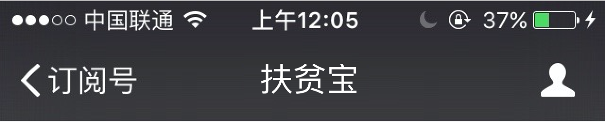

西安市三年扶贫攻坚综述
2016-01-01 8:40
陕西宣传网
陕西-西安 李伟
这是一场集聚全社会力量，全方位消除贫困、改善民生的攻坚战；
这是一场让36万多贫困人口实现全部脱贫的“中国梦”的西安实践；
从2013年起，西安市委、市政府响亮提出：3年完成36.6万贫困人口脱贫任务，让“两不愁、四保障”（即：不愁吃、不愁穿，保障义务教育、基本医疗、住房和养老）覆盖所有贫困人口，提前五年率先在全省完成新十年脱贫任务。
今年，习近平总书记来陕视察工作时强调：增强紧迫感，按照精准扶贫、精准脱贫的要求，加大扶贫开发工作力度，真抓实干，吹糠见米，确保贫困地区和贫困人口如期实现脱贫致富。
习近平总书记提出的要求，更是对西安扶贫工作指明了方向，成为工作指针。目前，由专项扶贫、行业扶贫、社会扶贫组成的“三位一体”精准扶贫大格局在西安业已初步形成，目前西安累计实现26.56万人脱贫，脱贫人口人均纯收入达到4820元，预计今年年底前将实现所有贫困人口脱贫。
绘定蓝图 让36万多贫困人口走向小康
2012年的一份统计数据显示：西安共有贫困村庄508个，贫困人口50.7万人，主要分布在周至、蓝田、户县、长安等7个县区。
贫口人口一日不脱贫，构建小康社会无从谈起。
2012年6月25日，省委常委、西安市委书记魏民洲冒雨驱车100多公里，来到秦岭深处的蓝田县葛牌镇调研扶贫开发工作，他要求“要按照中央和省委决策部署，切实怀着对群众的深厚感情，转变作风，一抓到底，不断推进扶贫开发工作常态化、制度化，让更多困难群众早日脱贫致富。要实现扶贫开发的常态化、制度化，直到困难群众彻底脱贫致富。”
同年11月19日，西安市长董军为“两联一包”扶贫作动员讲话：“开展‘两联一包’扶贫是市委、市政府为加快扶贫开发步伐作出的一项重大决策，是培养锻炼干部、加强干部队伍建设，确保西安率先完成新阶段扶贫开发任务的需要。”
2013年，《西安市扶贫工作三年行动计划实施方案》应运而生，成为西安扶贫工作指导性文件。一场以着力改善贫困地区发展条件，逐步提高贫困人口自我发展能力，不断增加贫困群众收入的扶贫攻坚战全面打响。
按照《实施方案》，西安市计划到2015年底，努力实现“三年行动计划”确定的脱贫目标，即2013年完成10万人脱贫（含5.5万绝对贫困人口）；2014年完成13万人脱贫；2015年完成13.6万人脱贫。同时，他们还将逐步提高低保标准，解决全市8.1万农村低保人口脱贫问题，力争“两不愁、四保障”覆盖西安所有贫困人口。
精准扶贫 “两联一包”驻村帮扶铺设“管道”
今年，中央一号文件提出推进精准扶贫。其实在2012年，西安就先人一步，开始创新扶贫工作方式，改变“大水漫灌”为精准“滴灌”，将扶贫政策、资源集中到以户为单位的贫困人口家中。
2012年11月，西安市两万多名帮扶干部、社会爱心人士就离开繁华的都市，走在崎岖山路上，他们深入到“两联一包”帮扶点，逐户调查、真情帮扶。2013年，全市对36.6万贫困人口进行了摸底统计，实行动态管理并建立起了翔实的数据档案，做到对象精准；2014年3月，574支驻村扶贫工作队满怀真情，和这些“穷亲戚”同吃同住，对识别出的贫困人口按照“一村一策、一户一法”要求，制定具体脱贫计划和针对性帮扶措施，做到施策精准；对贫困地区和群众精准配置扶贫资源，做到管理精准；这些扶持政策保持三年不变。
山路无言，山路有情，一笔一画记录下他们的脚步和汗水。西安市开展“两联一包”扶贫活动三年以来，两万多名驻村干部、社会爱心人士沿着山路，为贫困群众送帮扶资金，送开发项目。送去了温暖，收获了村民的笑脸。正是他们为精准扶贫铺设下的“管道”，让各项惠民政策精准“滴灌”，使其作用最大化。村民们都说：“干部住到村里，心就踏实了。”
合力攻坚 构建“三位一体”大扶贫格局
“专项扶贫、行业扶贫、社会扶贫组成了‘三位一体’大扶贫格局。这就有如织出了一张细密的网，全方位改善贫困状况，走向富裕，奔向小康。”西安市扶贫办负责人如是说。目前，西安市“三位一体”大扶贫格局基本形成，齐头并进，确保对贫困地区各项投入高于全市平均水平，形成扶贫开发合力。
专项扶贫让西安很多贫困村，黄土变黄金。几年来，户县天桥镇胡家庄靠着土地流转金、股份分红、劳务工资一举成为富裕村：目前，胡家庄村农民人均纯收入达到了14600元，3年时间翻了一番。与之相应的是蓝田县洩湖镇簸箕掌村，在移民搬迁政策带动下，昔日地质灾害频发、交通不便的小村庄，一举成为一座乡村旅游文化名村，游人纷至沓来。不断增强的内生动力促使村民收入从2000元迈向万元大关。
扶贫攻坚三年计划搬迁2.15万户8.4万人，目前已开工建设了16个社区、93个移民搬迁安置点，采取社区安置、集中安置和零散搬迁等方式，搬迁群众13075户5.3万人，涌现了蓝田黑沟村、簸箕掌村，长安五台社区，周至楼观社区等一批亮点工程。2014年获得了全省移民搬迁考核优秀等次。今年，西安市在做好2013年、2014年二期工程的同时，新实施3.3万人的移民搬迁。经过两年建设，2013年启动的7个社区34个集中安置点整体推进，主体完工3677户，完工率为88.5%；2014年启动的9个社区59个集中安置点开工率达到100%，目标任务顺利完成。
在行业扶贫大体系下，三年间，近千家企业赴贫困村开展帮扶，一阵社会扶贫之风吹进了贫困户的家，吹散了千百位贫困户心里的阴霾。
同时，西安对贫困地区教育发展项目予以重点倾斜。统筹城乡义务教育资源，加快推进贫困地区基本公共教育服务均等化，贫困地区义务教育巩固率达到98%以上，学前教育毛入学率达到90%，高中阶段毛入学率达到90%以上。
寒门学子人人都有学上。西安市建立起了贫困家庭大学生、中高职在校生和高中生数据库，向应届大学生按规定发放助学金，西安市安排财政专项扶贫资金400万元，贫困大学生4年将获得最高1.2万元的助学金。
面对生活翻来覆去地变化，许多贫困群众由衷地说：“‘整村推进’、‘扶贫搬迁’、‘产业扶贫’、‘行业扶贫’、‘驻村扶贫’、‘两联一包’……三年来，这一项项扶贫项目和政策，不仅给我们送来了致富希望，更送来了社会的关爱、党和政府的温暖。”
< 新闻


扶贫新闻
首页
<
>
决战贫困——来自兰考扶贫攻坚的报告
问政于民知得失 问需于民知冷暖
2015-12-30
2016-01-05